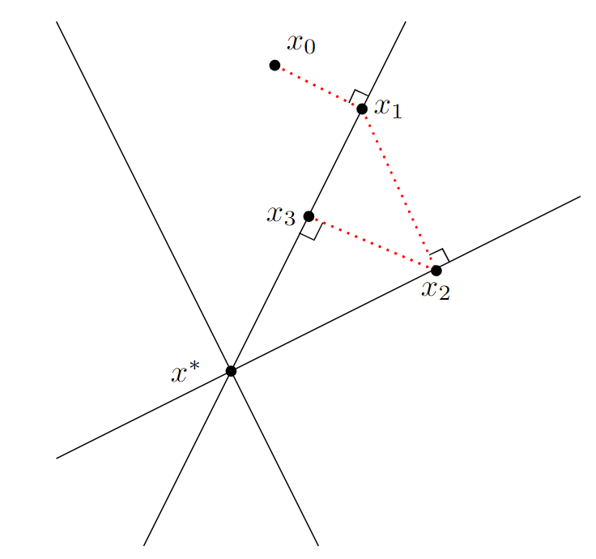

MSU SLIM Group

At Michigan State, I was a member of of Dr. Saiprasad Ravishankar's Signals, Learning, and Imaging Group at MSU, working on a collaboration with Los Alamos National Lab. My focus was mainly on descattering and density reconstruction techniques for X-ray CT imaging. In particular, we looked at the performance of locally-learned scatter models for particle simulation data, as well as comparisons of one-step and two-step optimization techniques for these problems. The latter topic led to this paper.
Kaczmarz Methods

In the summer of 2021 I was fortunate to participate in the UCLA Computational and Applied Mathematics REU in which I studied Kaczmarz methods with Dr. Jamie Haddock. We are interested in all sorts of Kaczmarz-type methods and applications, but especially in coming up with weighting or sampling methods for extended Kaczmarz methods which may either improve convergence results or change the type of convergence achieved.
Stochastic Subtraction Games

Imagine playing a two-player game with a pile of counters. Alternating turns, each player has to remove one, two, or three counters from the pile. The goal of the game is to be the player to take the last counter. This game (also known as the subtraction game, or by its more general form Nim) is a common example in combinatorial game theory, and optimal strategies are well known. I am interested in a variant in which the available moves have randomness involved, instead of being fixed quantities. This change leads to some interesting emergent properties and phenomena, and I am working on proving some facts about it. This idea was the subject of my honors senior thesis at MSU, found here.
Two Point Conversions
I've always been a rather aggressively-minded college football fan, especially when it comes to two point conversions. I came across an approach by Sackrowitz (2000) which matched up with my intuition and I have been working on extending it. The main idea is to treat the effect of the point-after-touchdown decision as a decision tree: after a touchdown, a team can decide to either go for two or kick an extra point, each of which creates different scenarios with different success rates. With certain assumptions, this tree can be backpropagated to come up with win probabilities for a given decision. This approach (Sackrowitz's) assumes that a coach know exactly how many drives are remaining. If this isn't known, what is the best choice? I am trying to answer this question using data-driven models (see left), as well as potentially include more decisions in the calculation.
Sports Rankings

I'm incredibly bitter about the College Football Playoff, and naturally think a lot about better ways to rank sports teams. During the UCLA REU we discussed the least squares rating method, and it occurred to me that it would be particularly appropriate for Ultimate frisbee which led to the preparation of this paper. Other ongoing interests in this area include covariance estimation methods for sports data for use in weighted or generalized least squares settings, as well as graph-based approaches for interpreting game outcomes.